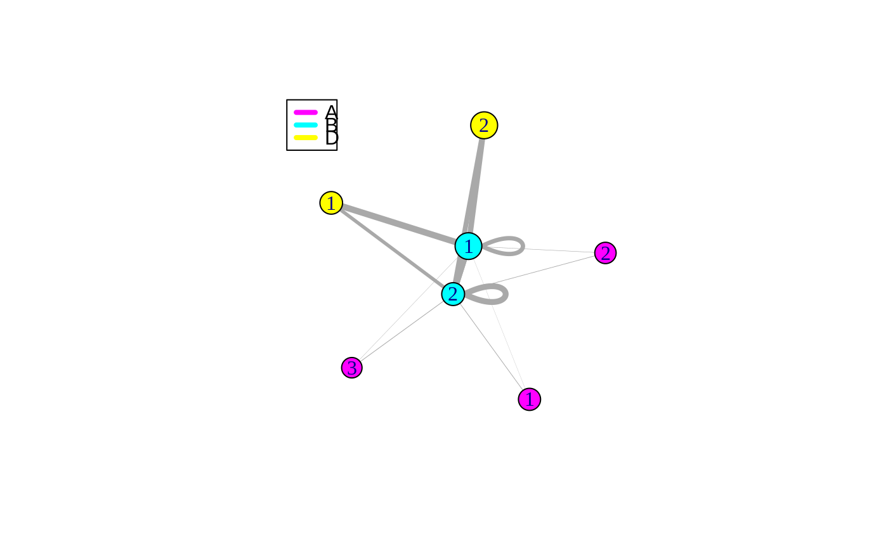

plotMBM.RdPlot the mesocopic view of the multipartite network obtained by the Genreliazed block models. resMBM is the results of of MBM fitting (output of multipartiteBMFixedModel for given numbers of clusters or multipartiteBM if the number of clusters is selected)
plotMBM(resMBM, whichModel = 1, mycol = NULL, thres = 0.01, cex = 1, maxCurved = 3)
| resMBM | A fitted Generalized BlockModel |
|---|---|
| whichModel | The index corresponding to the model to plot (default is 1, the best model) |
| mycol | A list of colors for the functional groups |
| thres | A threshold under which edges correponding to probability of connections are not plotted |
| cex | graphical parameter: |
| maxCurved | graphical parameter : curvature of the edges |
v_K <- c(3,2,2) n_FG <- 3 list_pi <- vector("list", 3); list_pi[[1]] <- c(0.4,0.3,0.3); list_pi[[2]] <- c(0.6,0.4); list_pi[[3]] <- c(0.6,0.4) E = rbind(c(1,2),c(2,3),c(2,2)) v_distrib <- c('bernoulli','poisson','poisson') typeInter <- c( "inc", "inc" , "adj" ) list_theta <- list() list_theta[[1]] <- matrix(rbeta(v_K[E[1,1]] * v_K[E[1,2]],1.5,1.5 ),nrow = v_K[E[1,1]], ncol = v_K[E[1,2]]) list_theta[[2]] <- matrix(rgamma(v_K[E[2,1]] * v_K[E[2,2]],7.5,1 ),nrow = v_K[E[2,1]], ncol = v_K[E[2,2]]) list_theta[[3]] <- matrix(rgamma(v_K[E[3,1]] * v_K[E[3,2]],7.5,1 ),nrow = v_K[E[3,1]], ncol = v_K[E[3,2]]) list_theta[[3]] <- 0.5*(list_theta[[3]] + t(list_theta[[3]])) # symetrisation for network 3 v_NQ = c(100,50,40) dataSim <- rMBM(v_NQ ,E , typeInter, v_distrib, list_pi, list_theta, seed=NULL, namesFG= c('A','B','D'),keepClassif = FALSE) list_Net <- dataSim$list_Net resMBM <- multipartiteBMFixedModel(list_Net,namesFG = c('A','B','D'), v_K = c(3,2,2),v_distrib = v_distrib) plotMBM(resMBM,mycol=c('magenta','cyan','yellow'))